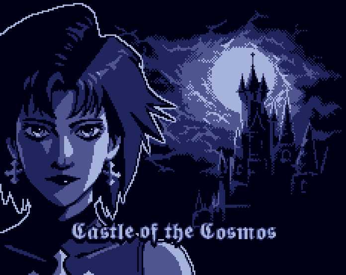
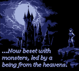
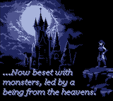

Castle of the Cosmos

STATUS: Done
This game was made for the 11th GBJAM (Gameboy-themed gamejam), with a group of buddies I knew from my old forum-going days.
The game is a sidescrolling action platformer (similar to a Castlevania), with combat based on a projectile that gets stronger every time it bounces on a wall.
The gamejam lasted one week - I did not participate all that much (I simply fixed some bugs near the end of it, and made one of the chiptune songs). I hadn’t ever used GameMaker before so this was an opportunity to learn on the spot.
These online pals of mine made most all of the pixelart, and music - I made one just one track. To be more precise, we called the team Galloway Games, in reference to an old forum we had going long ago.
You can play the game directly in your browser here (or download the executable), over on the official page on itch.io
Here are some screenshots of the game:


 
